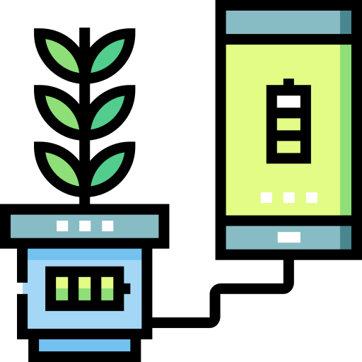
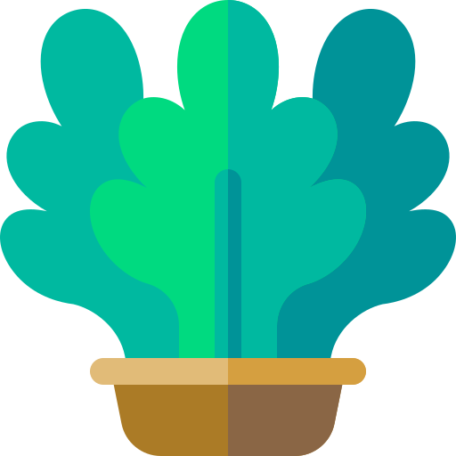

SEU CULTIVO, MAIS PERTO
Bom cuidar.
Melhor colher.
Acompanhe a umidade e cuide da irrigação
da sua plantação em um só lugar.

Sem conexão
Conecte seu servidor ou explore o modo de demonstração.
Use também no computador
Baixar para computadorExtraia o ZIP e abra o arquivo HTML no seu navegador.
MINHA PLANTAÇÃO
AGUARDANDO DADOS
Sua plantação
Última irrigação
—Irrigação automática
Conecte para acompanhar
UMIDADE DO SOLO
—umidade atual
Nenhuma leitura recebida
Água na medida certa
Escolha a umidade desejada para a irrigação manual.
ATIVIDADE DESTA SESSÃO
- Nenhuma ação realizada.